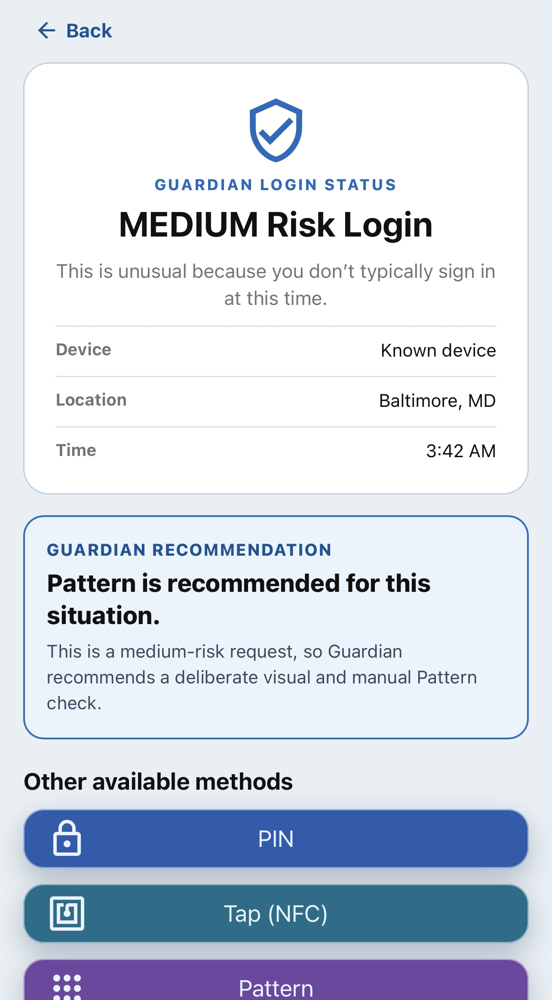

Prototype design
Contextual guidance through Guardian
Guardian explains the simulated login context and recommends a method while leaving the other options available.
Prototype note: The risk assessment and recommendation are simulated research prompts. Pattern authentication is not inherently stronger than a PIN; security depends on implementation and policy.